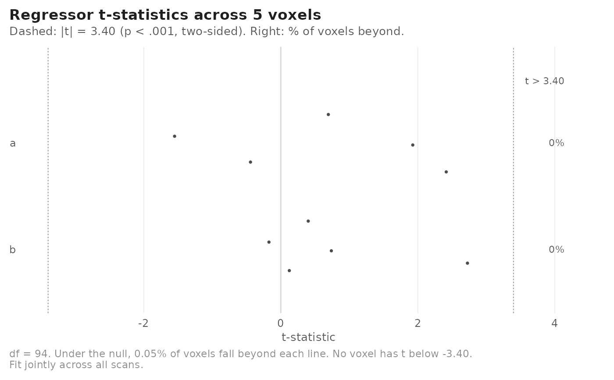
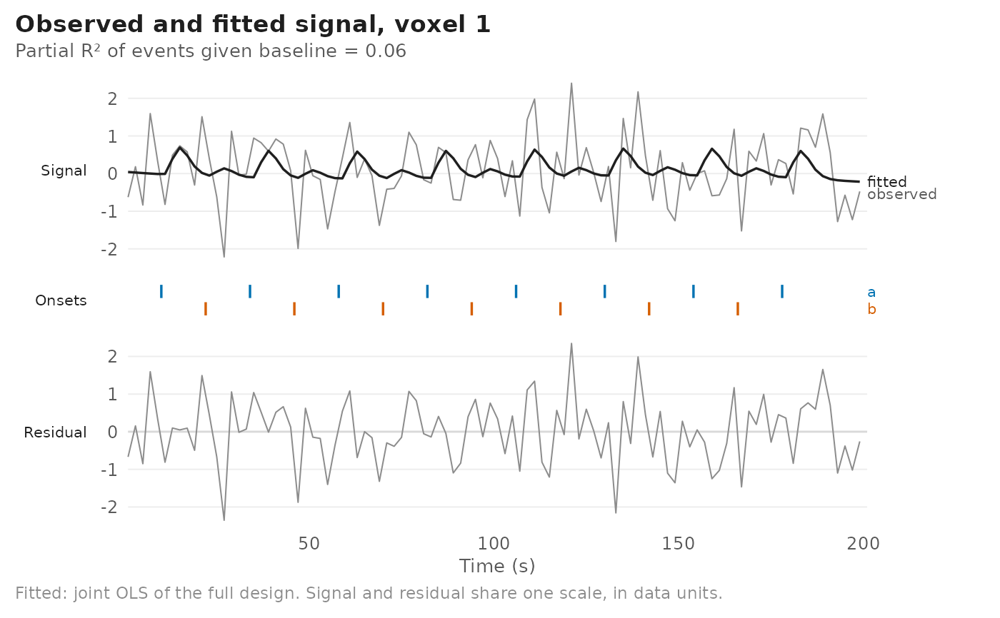

Visual summaries of an fmri_lm fit. Five views are available:
Usage
# S3 method for class 'fmri_lm'
autoplot(
object,
type = c("estimates", "contrasts", "hrf", "timecourse", "residuals"),
voxel = NULL,
level = 0.95,
sample_at = seq(0, 20, by = 0.25),
direct_labels = TRUE,
...
)
# S3 method for class 'fmri_lm'
plot(
x,
type = c("estimates", "contrasts", "hrf", "timecourse", "residuals"),
voxel = NULL,
...
)Arguments
- object, x
An
fmri_lmobject.- type
One of
"estimates","contrasts","hrf","timecourse","residuals".- voxel
Optional integer voxel index (or indices, for
"estimates","contrasts","hrf"and"residuals").- level
Confidence level for intervals and bands.
- sample_at
Time points (s) at which to evaluate the HRF, for
type = "hrf".- direct_labels
Logical; for
type = "hrf", label each curve next to it (default) or, ifFALSE, use a legend. A legend reads better in small or many-panel figures.- ...
Passed on from
plot()toautoplot().
Value
A ggplot2 object. plot() prints it and returns it invisibly.
Details
"estimates"With no
voxel, the distribution of t-statistics across voxels for each event regressor, drawn as a sina plot (points spread in proportion to their density), with reference lines at the two-sided p < .001 (uncorrected) critical value and the share of voxels beyond it in each tail. Withvoxel, a coefficient plot of estimates with confidence intervals, one panel per event term so that regressors in different units (a condition and a parametric modulator) do not share an axis."contrasts"As
"estimates", for the fitted contrasts."hrf"The estimated hemodynamic response for each condition: the term's HRF basis weighted by the fitted coefficients. For one voxel, the band is a pointwise confidence interval from the coefficient covariance, and a curve whose interval includes zero at its peak is drawn faded and dashed and labelled "n.s.". For several voxels, the line is the mean across voxels, the band a t-based confidence interval of that mean (voxels treated as independent), and up to 200 voxels are drawn faintly underneath. Peak latency is reported only for terms with more than one basis function; with a single basis the shape, and so the latency, is fixed by the HRF rather than estimated.
"timecourse"Observed signal and model fit for one voxel, with event onsets in a lane per condition and residuals in a lower panel drawn on the same vertical scale.
"residuals"Autocorrelation of the residuals at lags 1 to 10 scans. By default this summarises up to 200 voxels spread evenly through the data (median and 10th-90th percentile per lag); with
voxel, it shows those voxels. Least-squares residuals are negatively autocorrelated even when the noise is white, so the 95\ white-noise range is centred on the autocorrelation this design induces, not on zero. For fits with an AR noise model the residuals are also shown after prewhitening with the fitted AR coefficients, which is the check that the noise model removed the serial correlation. The subtitle reports a portmanteau test of lags 1-10 that accounts for both the design-induced mean and the correlation between lags that regression introduces (a generalised Ljung-Box test).
When voxel is NULL for the "hrf" and
"timecourse" views, the voxel with the largest absolute event
t-statistic is shown and named in the subtitle.
Critical values and intervals use the degrees of freedom the fit used for
inference (fit$result$df$inference), which differ from the nominal
residual df for AR, robust, or effective-df corrected fits.
In the "timecourse" and "residuals" views the fitted values
are an ordinary least squares fit of the full design (events plus baseline)
to the voxel: run by run for runwise fits, jointly otherwise. For OLS fits
these are the model's own fitted values; for AR or robust fits they are the
unweighted counterpart, on the scale of the data. For runwise fits the
fitted values use run-specific coefficients, whereas the estimates view
shows coefficients pooled across runs. The reported partial R-squared is
\(1 - RSS_{full} / RSS_{baseline}\): the share of the variance left by
the baseline model that the event regressors explain.
Examples
# \donttest{
set.seed(1)
ev <- data.frame(onset = seq(10, 180, by = 12), run = 1,
condition = factor(rep(c("a", "b"), length.out = 15)))
Y <- matrix(rnorm(100 * 5), 100, 5)
dset <- matrix_frame(Y, TR = 2, run_length = 100, event_table = ev)
fit <- fmri_lm(onset ~ hrf(condition), block = ~ run, dataset = dset)
ggplot2::autoplot(fit)

ggplot2::autoplot(fit, type = "timecourse", voxel = 1)

# }